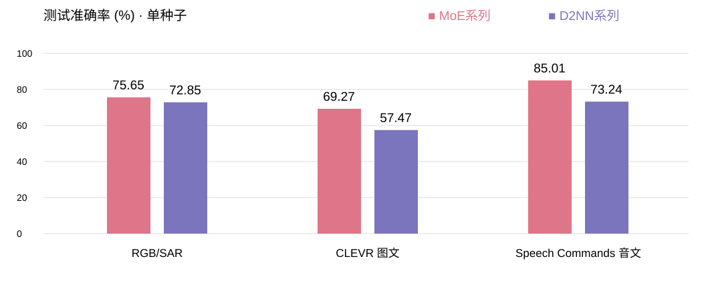

| 任务 | 配置 | MoE | D2NN | 差值 |
|---|---|---|---|---|
| RGB/SAR 跨传感器分类 | 共享CNN + MoE / D2NN | 75.65% | 72.85% | +2.80 pp |
| CLEVR 图文匹配 | CNN + MoE+OEO / D2NN+OEO | 69.27% | 57.47% | +11.80 pp |
| Speech Commands 音文匹配 | 无CNN，MoE+OEO / D2NN+OEO | 85.01% | 73.24% | +11.76 pp |
如何解读：指定配置均观察到MoE领先；但仍是单种子探索结果。图文MoE训练77.90%→测试69.27%，存在泛化差距。音文路由第一专家占91.23%，并非均衡分工。
尚未解决：优势对OEO/正则设置敏感；音文另一OEO下为84.54%/84.49%。不能把本表当作跨配置最优baseline或稳定显著优势证明。
雷达MIT许可；CLEVR、Speech Commands为CC BY 4.0。详细数据处理、训练参数及来源见同目录01—03文档与evidence。